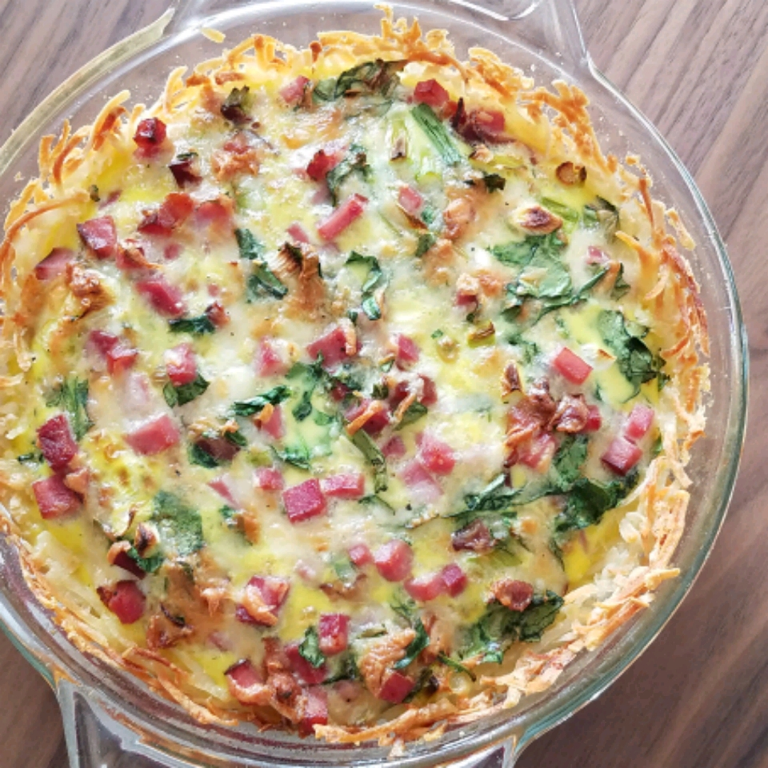

Home
Shredded Potato Quiche

Description
Quiche with crunchy potato crust.
A good one dish meal and a great way to use leftovers.
You may also use 1 cup chopped vegetables of your choosing,
such as onions, peppers, broccoli or tomatoes, etc.
Ingredients
- 1 (16 ounce) package frozen shedded hash brown potatoes, thawed
- 1/4 cup butter, melted
- 5 eggs, lightly beaten
- 1 cup cooked ham
- 1/4 cup milk
- salt and pepper to taste
Steps
- Preheat oven to 375 degrees F (190 degrees C). Lightly
grease a 9 inch pie pan.
- Press potatoes into greased pie plate. Brush with melted
butter. Bake in preheated oven until lightly browned,
about 10 to 15 minutes.
- In a large bowl, stir together beaten eggs, milk, cheese,
ham, salt and pepper. Pour egg mixture into baked crust.
- Bake in a preheated oven until center is set, about 20 minutes.
The quiche will be browned on top and a knife inserted into the
center will come out clean.